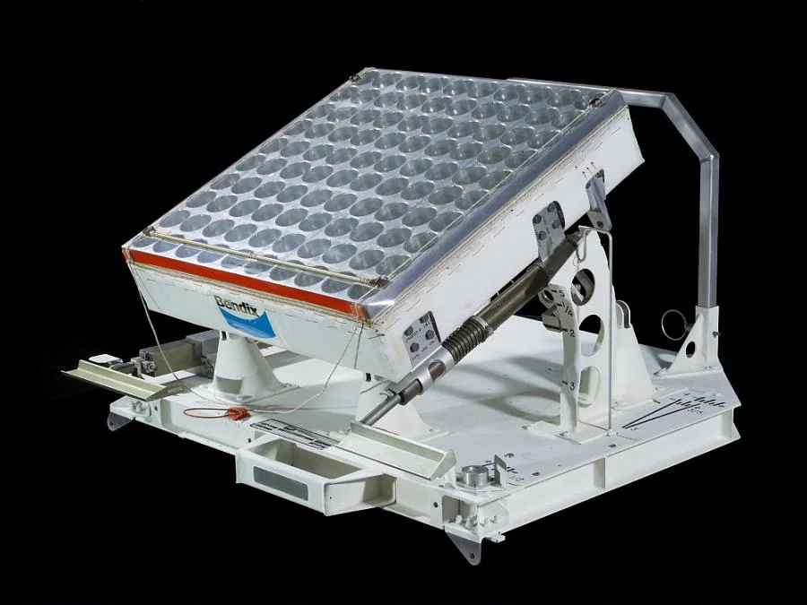
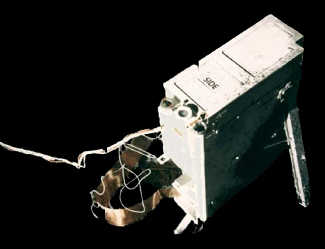
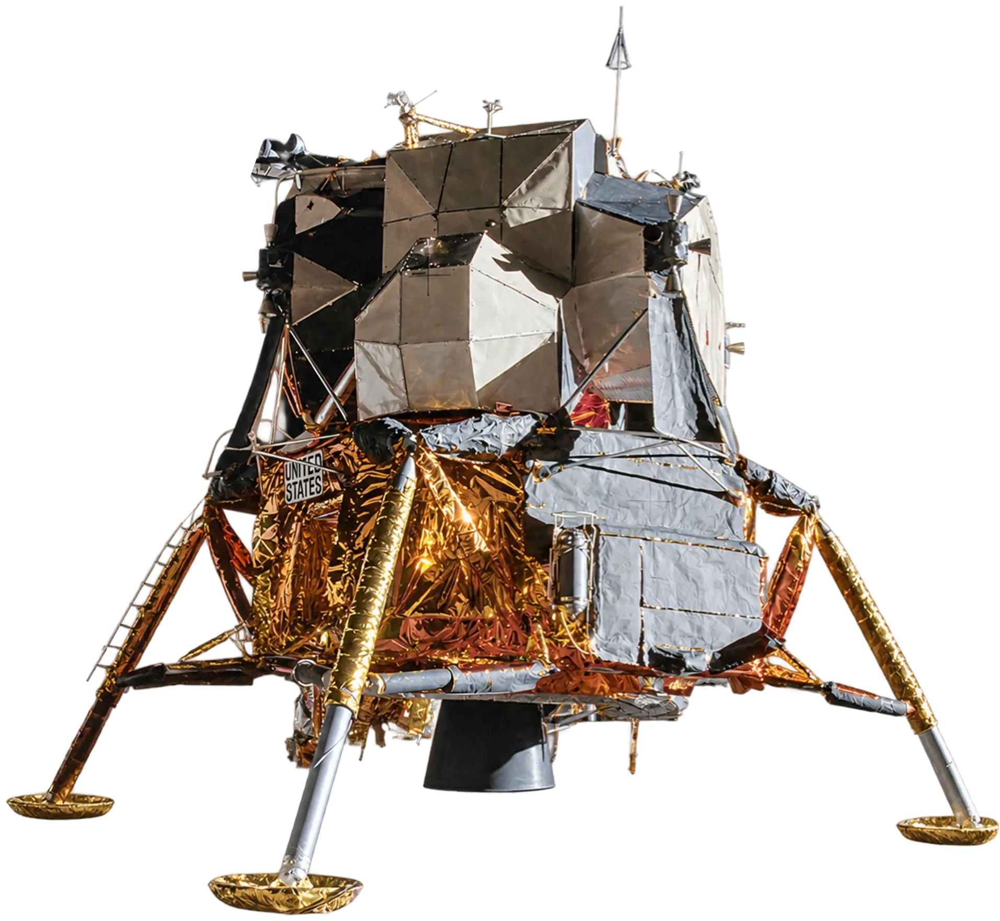
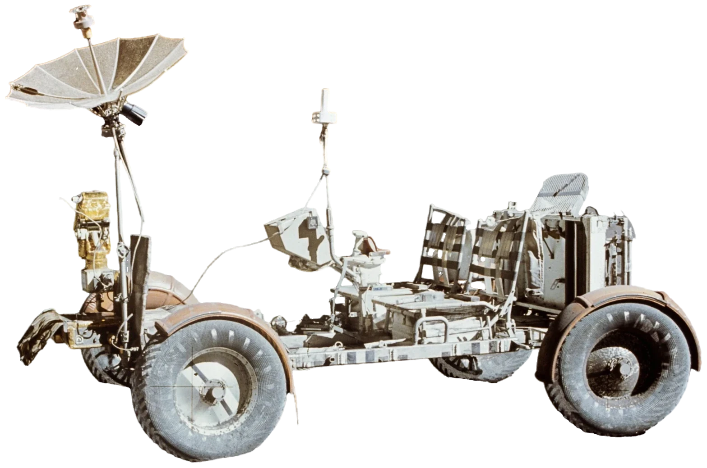

Lunar Module
I am Falcon, the Apollo 15 Lunar Module. I carried astronauts, their rover, and scientific equipment to the Moon!
Laser Ranging Retroreflector
I have 300 tiny glass reflectors. I don't need power: when scientists send a laser pulse from Earth, I bounce it back. By timing how long the light takes to travel to the Moon and back, scientists can measure the Earth-Moon distance very accurately. On average, this takes about 2.56 seconds.

Suprathermal Ion Detector (SIDE)

This is SIDE! My measurements helped understand how these particles interact with the Moon and how electrically charged its surface can become. These particles came from the Sun and some of them came from the space around Earth.

Here's my rover!
I folded up for the trip to the Moon and once we landed, the astronauts unfolded me!
I also carried a communications unit with two antennas. A small antenna relayed the astronauts' voices and data while I was moving. When we stopped, they aimed my large dish antenna toward Earth to send TV pictures.
Each wheel had its own motor, and both the front and rear wheels could steer. This helped me carry astronauts and their equipment across the Moon.
